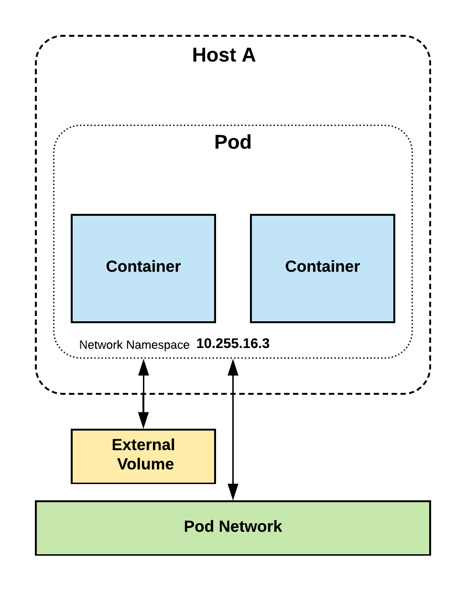
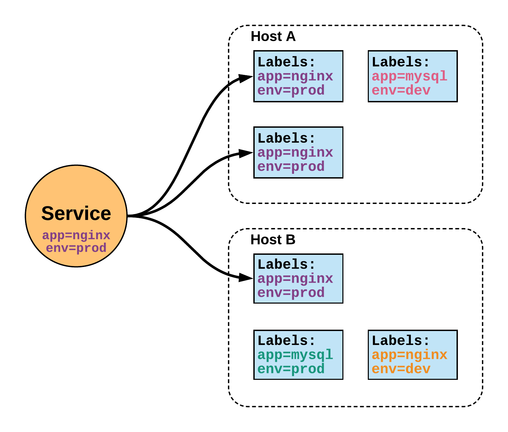

The Easy Way
KUBER... what?
k[ubernete]s = k8s = helmsman = timonier 🛳️

Production-Grade Container Orchestration
- Projekt i realizuar nga Google ne 2014
- I bazuar ne eksperiencat e Borg dhe Omega
- I projektuar si nje nderthurje loosely coupled e shume komponenteve te specializuar ne levrimin,
mirembajtjen dhe shkallezimin e workloads
Abstracts away underlaying hardware
Nodes
Shared Pool
Shpjego qe ska me standalone servers po nje resource pool
Pets (every operation is customized with care and love for the individual app)
Manage your applications like Cattle (generic, bulk operations)
Decouples Infra and Scaling
- All Services are natively Load Balanced
- Scale Up and Down dinamically
- Self-Healing and seamless update and rollback
You (the admin) declares the
desired states, Kubernetes' main task is to make the
desired state the actual state.
jep nje shembull per self healing, kur kerkon 3 instanca te dickaje gjithmone do te jene 3.
shpjego rreth deplyments
High Level Component Architecture
 shpjego diagramen dhe trego cdo komponenet. mos harro reconcillation loop
shpjego diagramen dhe trego cdo komponenet. mos harro reconcillation loop
Key Concepts
Pods
- Elementi baze i k8s
- Nje/Shume containers qe share volumes, network namespace
- Ephemeral = Vdekshem
fun fact: pod eshte grumbullim balenash. trego me shume se cfare share

shpjego rreth deployments qe jane shume pods qe komunikojne bashke. trego deployments strats
Services
- Metoda per te ndervepruar me Pods
- Resource jetegjate
- Static Cluster IP
- DNS name
- Jo Ephemeral = Pavdekshem

shpjego rreth labels dhe si nderveprojne me services